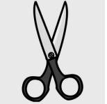

Un vieille homme milliardaire a besoin d’arroser le jardin de son manoir mais plusieurs jardiniers de talents lui ont été recommandés, il décide donc de les départagés avec une mission : arrosée les plantes dans son jardin laisser à l’abandon.
Les joueurs incarnent des jardiniers dont le but est d'arroser un maximum de plantes pour gagner la partie, le jeu peut se jouer à 2 jusqu'a 4 personnes !
Chaque joueurs commencent à un emplacement différents sur le plateau.
Les joueurs débutent avec un buisson et piochent 2 cartes, il est possible d’utiliser qu’une seule carte par tour. Une fois la carte utilisée, elle doit être remise dans la pioche. Par la suite les joueurs ne pourront piocher qu’une carte par tour.
Buisson : permet de bloquer une case sur le plateau, seul la carte « Cisaille » permet de contrer cette carte
Il y a 5 plantes de différentes couleurs à arroser, elles sont disposer au 4 extrémité
Arrosoir : permet d’arroser les plantes de couleurs sur le plateau, la carte s’utilise seulement quand la distance entre le joueur et la plante est de une case
Cisaille : permet de couper les buissons, la carte s’utilise seulement quand la distance entre le joueur et le buisson est de une case
Plantes carnivore : permet de bloquer une case sur le plateau, seul la carte « Saut » permet de contrer cette carte
Saut : permet de contrer la carte « Plantes Carnivores » ou l’obstacle « Rocher » en passant au dessus de la case bloqué